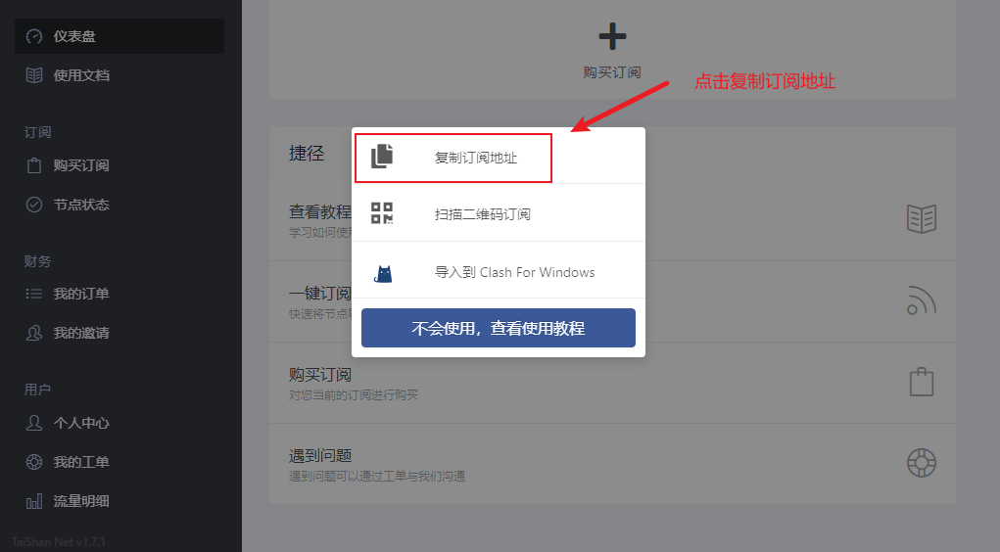
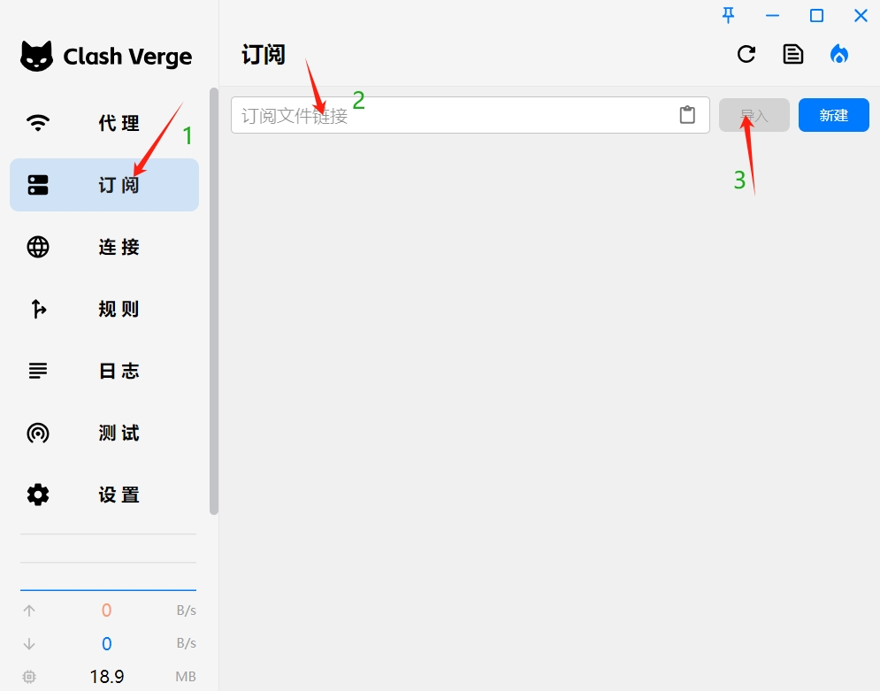
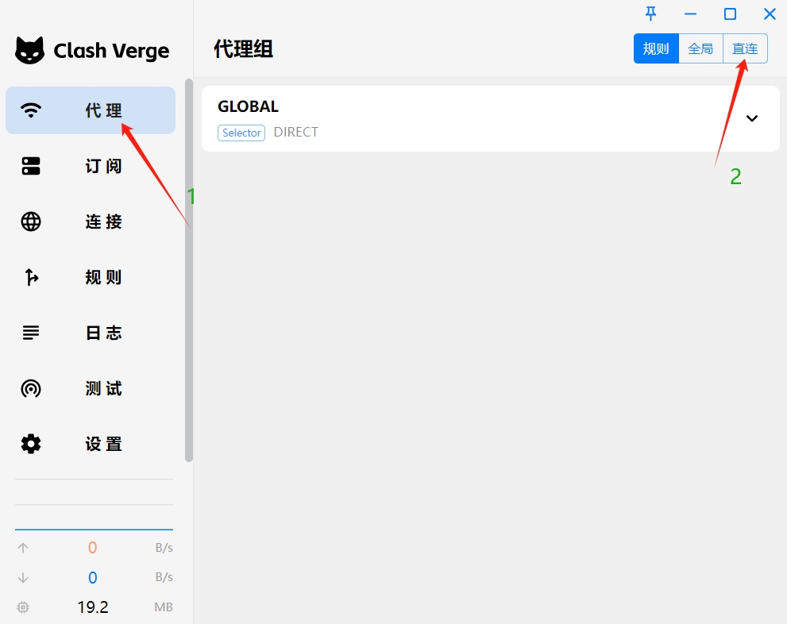

最后更新: 2024-05-20
Clash Verge 简介
提示：Clash Verge 只是翻墙软件，你需要拥有机场订阅才能使用。
1、获取订阅地址
首先需要注册一个机场，然后注册机场后进入主页，如下图操作，其他机场界面可能不一致，但基本大同小异，仪表盘->一键订阅->复制订阅地址即可。
2、导入订阅链接
按下图1，2，3顺序操作，粘贴购买的订阅链接 URL在2中，然后点击 导入即可。
此处有一个小坑，可能导致订阅失败，如果您不是第一次用clash-verge这个软件，这个软件中存在着已经过期失效了的订阅，导入的时候可能在用不通的节点下载，这是会报网络错误，那就按下图1，2把网络模式改为直连模式来导入订阅，导入成功后再切换成规则模式用于上网。
3、选择节点
成功导入订阅后需要手动选择用哪个代理节点来上网，想用哪个点哪个就可以。
序号2这个小图标是用来测试全部节点的延迟，clash显示的节点延迟有时候并不准确，看着数字很大，手动点一下数字就可以重新测延迟，或者点2这个图标是重新测全部节点的延迟
序号3这个地方是选择上网模式的，规则(符合规则国外网址的走代理，国内网址直连不消耗流量)，全局(就是所有网址都走代理，一般不选择这个)，直连（顾名思义，不走代理，等同于关闭了梯子）

4、开启系统代理
这一步必不可少，有些用户就是因为这一步没操作结果就是上不了外网，这一步的做用在于让clash-verge这个软件真正接管电脑系统的网络流量。

OK了，就这么4步，使用还是很简单的，其他那些高级功能，大部分用户是用不到的，有兴趣自己点点，google搜索一下研究研究即可。